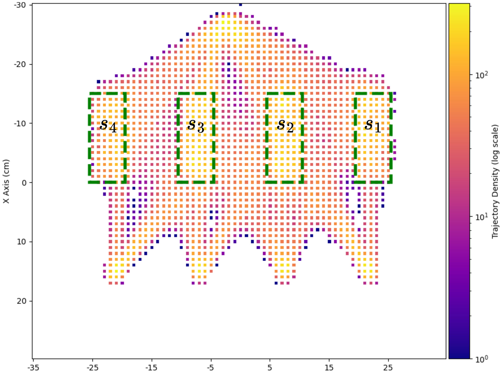
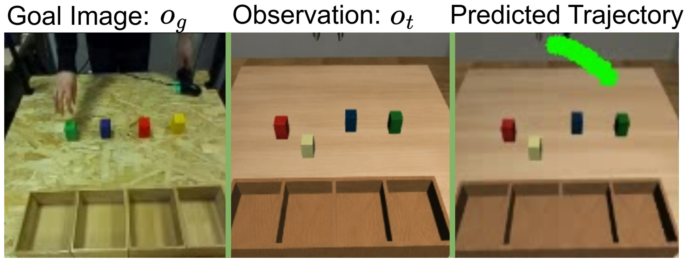
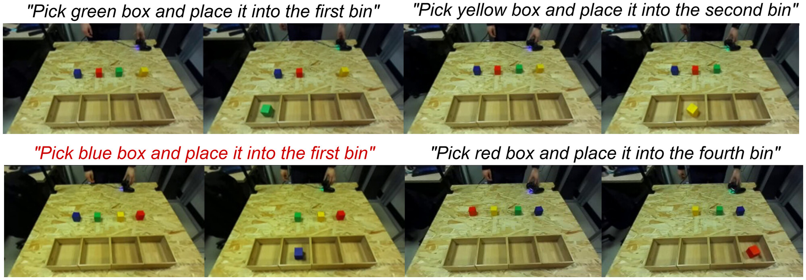

REASONED
Robots lEarn tASks ObserviNg vidEo Demonstration
1 · Problem and Taxonomy
Human-Video-Conditioned Multi-Task Imitation Learning
A fundamental goal in robotics is building autonomous systems that can perform multiple manipulation tasks in flexible, dynamic environments. Human-Video Conditioning lets a robot learn a new task simply by watching a human demonstrator perform it. A video is a more direct and intuitive form of task specification than a natural-language instruction, since it encodes not only what has to be done but also how. The central challenge is that the human demonstration cannot be transferred to the robot directly: demonstrator and robot may differ in embodiment, object layout, viewpoint, or environment.
Problem formulation
The robot policy maps its current observation, its proprioceptive state, and a video demonstration provided by a human demonstrator to a robot action. This work addresses the most general case, in which the demonstration is an unstructured human video, with no action labels, segmentation, or kinematic alignment between demonstrator and robot. The policy must infer the task from the video, identify the task-relevant elements, ground them in the robot's scene, and generate suitable actions for its own embodiment.
RQ1 · current focus
How can we develop a system that is robust to novel tasks: new combinations of skills and objects (RQ1-1), and new spatial configurations with known objects (RQ1-2)? RQ2 (demonstrator domain shift) and RQ3 (agent domain shift) are planned for the following reporting periods.
Taxonomy of methods
The state of the art is organized by the information extracted from the human video and used to condition the policy. Hand-tracking methods exploit the motion of the human hand; object-centric methods focus on the manipulated object; end-to-end methods map observations and demonstrations directly to actions. End-to-end methods have since grown into Vision-Language-Action models (VLAs) and World-Action Models (WAMs), included as language- or image-text-conditioned references because they sit at one of the most active frontiers of Physical AI.

Hand-tracking
Estimates the human hand motion and uses it for planning or supervision. In Mimic-Play, a latent planner encodes the hand trajectory into a task-level plan that conditions a low-level policy. Intuitive, but it must bridge the human–robot embodiment and environment mismatch.

Object-centric
Identifies the object involved in the task instead of reproducing the human motion: a Conditioned-Object Detector localizes the manipulated item and its destination from the video. Less dependent on embodiment, but sensitive to changes in object appearance or layout.

End-to-end
Learns a direct mapping from observation and demonstration to action. OSVI-AWDA predicts attributed waypoints executed through hand-crafted motor primitives. Minimal engineering, but a harder learning problem with limited interpretability.

Vision-Language-Action
A pretrained vision-language backbone extended with an action head (OpenVLA-OFT, TinyVLA-H, MolmoAct2). These models inherit the semantics and robustness of large-scale pretraining, but need large datasets and are hard to fine-tune efficiently.

World-Action Model
A latent dynamics encoder pretrained on large-scale, action-free video (including human demonstrations) to predict future states; the learned world dynamics then condition a lightweight action head (VLA-JEPA, Mimic-Video).

Interleave-VLA
Extends a pretrained VLA (π0) to interleaved image-text instructions, where objects are referenced by cropped images (“Put [image1] into [image2]”). Grounding objects in images mitigates the attentional hallucinations of text-only VLAs.
Evaluation scenario
All methods are evaluated on a simulated pick-and-place scenario with 16 task variations, each defined by a combination of object color and target bin: the robot must pick the colored object and place it into the bin shown in the human video demonstration. Five metrics are reported: Reach (end-effector reaches the correct object), Pick (correct object grasped), Success (object placed in the correct bin), Success on Wrong Object (W.O., the task is completed on an incorrect object), and Success on Wrong Bin (W.B., correct object placed in an incorrect bin).

The manipulation scenario: the robot picks a colored object from the table and places it into the bin specified by the human video demonstration.

Distribution of object spawn locations in the robot workspace: each object can appear in any of four locations, while each bin has a fixed position.
2 · Baseline Evaluation
Baselines on the standard scenario and on RQ1
Representative baselines from each family are first compared on the standard, in-distribution scenario, and then evaluated on the two RQ1 robustness axes: task-level (RQ1-1) and spatial-level (RQ1-2).
In-distribution comparison
Hand-tracking baseline. Mimic-Play was trained under three increasingly challenging settings: a fixed shared region (demonstrator and robot share the spawn region, objects always in the same place), a variable shared region (objects in any of four locations), and different regions (demonstrator and robot operate from different spawn regions).

Inputs and output of the latent planner. The current observation ot comes from the robot vision system, while the goal image og is extracted from the human video demonstration. On the right, the gripper trajectory generated from the latent plan is projected onto the current observation as a sequence of waypoints.
| Setting | Reach | Pick | Success |
|---|---|---|---|
| Fixed shared region | 0.708 ± 0.012 | 0.456 ± 0.018 | 0.325 ± 0.010 |
| Variable shared region | 0.431 ± 0.000 | 0.312 ± 0.000 | 0.288 ± 0.005 |
| Different regions | 0.277 ± 0.024 | 0.190 ± 0.012 | 0.173 ± 0.011 |

Mimic-Play failure mode with different spawn regions: the gripper trajectory predicted by the latent planner (green dots) is biased toward the demonstrator's spawn region rather than the actual object location in the robot workspace.
Performance degrades as spatial complexity grows. The drop in Reach is the most telling signal: because the encoded hand trajectory is tightly coupled to the demonstrator's scene layout, the latent planner steers the robot toward the demonstrator's spawn region rather than the actual object location.
All families
Every baseline on the standard scenario, averaged over 16 task variations × 10 runs with different environment initializations, together with the prior each method relies on.
| Model | Priors | Reach | Pick | Success | W.O. |
|---|---|---|---|---|---|
| End-to-end | |||||
| MOSAIC | No task-specific prior | 0.32 ± 0.15 | 0.26 ± 0.15 | 0.24 ± 0.14 | 0.41 ± 0.16 |
| OSVI-AWDA | Motor-skill primitives needed for moving and picking | 1.00 ± 0.00 | 1.00 ± 0.00 | 1.00 ± 0.00 | 0.00 ± 0.00 |
| Object-centric | |||||
| CTOD-Policy | Conditioned-Object Detector on the target object | 0.99 ± 0.03 | 0.95 ± 0.06 | 0.71 ± 0.22 | 0.00 ± 0.00 |
| COD-Policy | Conditioned-Object Detector on the full set of target objects | 1.00 ± 0.00 | 0.94 ± 0.11 | 0.93 ± 0.14 | 0.00 ± 0.00 |
| World-Action Model | |||||
| VLA-JEPA | No task-specific prior | 1.00 ± 0.00 | 1.00 ± 0.00 | 1.00 ± 0.00 | 0.00 ± 0.00 |
| Mimic-Video | No task-specific prior | 0.87 ± 0.10 | 0.68 ± 0.11 | 0.67 ± 0.11 | 0.00 ± 0.00 |
| VLA | |||||
| OpenVLA-OFT | No task-specific prior | 0.99 ± 0.02 | 0.99 ± 0.03 | 0.98 ± 0.04 | 0.00 ± 0.00 |
| TinyVLA-H | No task-specific prior | 1.00 ± 0.00 | 0.97 ± 0.05 | 0.95 ± 0.06 | 0.00 ± 0.00 |
| MolmoAct2 | No task-specific prior | 0.94 ± 0.09 | 0.84 ± 0.15 | 0.80 ± 0.13 | 0.00 ± 0.00 |
| Interleave-VLA | Visual description of target objects | 1.00 ± 0.00 | 0.96 ± 0.06 | 0.84 ± 0.18 | 0.00 ± 0.00 |
Values are computed per task variation over 10 runs and averaged over the 16 variations; ± is the standard deviation across task variations. Within the end-to-end family, MOSAIC mostly fails to identify the task-relevant object (W.O. 0.41 ± 0.16, Success 0.24 ± 0.14), while OSVI-AWDA, which relies on hand-crafted motor primitives, reaches a perfect and fully consistent 1.00 ± 0.00. Among object-centric methods, COD-Policy (conditioned on the full set of task objects) reaches 0.93 ± 0.14, whereas CTOD-Policy (target object only) drops to a less consistent 0.71 ± 0.22: grounding all task-relevant objects is what makes object-centric conditioning reliable. Among World-Action Models, VLA-JEPA is perfect while Mimic-Video reaches 0.67 ± 0.11, since it predicts future states in pixel space, a much harder problem than VLA-JEPA's latent space. The VLA family is strong and consistent (0.80–0.98) with zero wrong-object failures. The RQ1 evaluation below shows whether this holds out of distribution.
RQ1-1: Task-level robustness
RQ1 is decomposed into two robustness axes, each evaluated through two complementary scenarios. Every scenario is reported under Training-Distribution (TD) settings (task variations seen in training, with different environment initializations) and Out-of-Training-Distribution (OTD) settings (task variations never seen in training).

RQ1-1 (task level): novel task combinations and novel object instances. RQ1-2 (spatial level): known-but-different region and unseen position.

Scenario #1: novel task configurations. Object-color / target-bin combinations not seen during training; the individual objects and bins are all known.

Scenario #2: novel object instances. The robot must manipulate an object that was present in the training environment but never used as a manipulation target.
Scenario #1: novel task configurations
TD: 12 variations × 10 runs; OTD: 4 variations × 30 runs.
| Model | Cmd. | Setting | P. | S. | W.O. | W.B. |
|---|---|---|---|---|---|---|
| OSVI-AWDA | Video | TD | 1.00 ± 0.00 | 1.00 ± 0.00 | 0.00 ± 0.00 | 0.00 ± 0.00 |
| OTD | 0.95 ± 0.09 | 0.95 ± 0.09 | 0.05 ± 0.09 | 0.00 ± 0.00 | ||
| COD-Policy | Video | TD | 0.93 ± 0.09 | 0.91 ± 0.10 | 0.00 ± 0.00 | 0.03 ± 0.04 |
| OTD | 0.04 ± 0.05 | 0.04 ± 0.05 | 0.05 ± 0.02 | 0.00 ± 0.00 | ||
| OpenVLA-OFT † | Lang. | TD | 0.99 ± 0.03 | 0.96 ± 0.06 | 0.00 ± 0.00 | 0.00 ± 0.00 |
| OTD | 0.98 ± 0.03 | 0.98 ± 0.03 | 0.00 ± 0.00 | 0.00 ± 0.00 | ||
| TinyVLA-H † | Lang. | TD | 0.94 ± 0.05 | 0.87 ± 0.09 | 0.00 ± 0.00 | 0.05 ± 0.08 |
| OTD | 0.96 ± 0.01 | 0.87 ± 0.06 | 0.00 ± 0.00 | 0.08 ± 0.05 | ||
| VLA-JEPA † | Lang. | TD | 1.00 ± 0.00 | 0.98 ± 0.04 | 0.00 ± 0.00 | 0.00 ± 0.00 |
| OTD | 1.00 ± 0.00 | 1.00 ± 0.00 | 0.00 ± 0.00 | 0.00 ± 0.00 | ||
| Interleave-VLA | Interl. | TD | 0.93 ± 0.11 | 0.84 ± 0.16 | 0.00 ± 0.00 | 0.09 ± 0.16 |
| OTD | 0.92 ± 0.06 | 0.78 ± 0.19 | 0.00 ± 0.00 | 0.15 ± 0.15 |
Scenario #2: novel object instances
| Model | Cmd. | Setting | P. | S. | W.O. | W.B. |
|---|---|---|---|---|---|---|
| OSVI-AWDA | Video | TD | 1.00 ± 0.00 | 1.00 ± 0.00 | 0.00 ± 0.00 | 0.00 ± 0.00 |
| OTD | 0.00 ± 0.00 | 0.00 ± 0.00 | 0.98 ± 0.04 | 0.00 ± 0.00 | ||
| COD-Policy | Video | TD | 0.90 ± 0.15 | 0.90 ± 0.15 | 0.00 ± 0.00 | 0.00 ± 0.00 |
| OTD | 0.00 ± 0.00 | 0.00 ± 0.00 | 0.13 ± 0.11 | 0.00 ± 0.00 | ||
| OpenVLA-OFT † | Lang. | TD | 0.98 ± 0.04 | 0.88 ± 0.13 | 0.00 ± 0.00 | 0.02 ± 0.04 |
| OTD | 0.99 ± 0.01 | 0.93 ± 0.08 | 0.00 ± 0.00 | 0.01 ± 0.01 | ||
| TinyVLA-H † | Lang. | TD | 0.86 ± 0.12 | 0.78 ± 0.12 | 0.00 ± 0.00 | 0.01 ± 0.03 |
| OTD | 0.00 ± 0.00 | 0.00 ± 0.00 | 0.78 ± 0.11 | 0.00 ± 0.00 | ||
| VLA-JEPA † | Lang. | TD | 1.00 ± 0.00 | 0.99 ± 0.03 | 0.00 ± 0.00 | 0.00 ± 0.00 |
| OTD | 0.98 ± 0.04 | 0.98 ± 0.04 | 0.03 ± 0.04 | 0.00 ± 0.00 | ||
| Interleave-VLA | Interl. | TD | 0.98 ± 0.04 | 0.95 ± 0.05 | 0.00 ± 0.00 | 0.03 ± 0.05 |
| OTD | 0.94 ± 0.04 | 0.89 ± 0.08 | 0.00 ± 0.00 | 0.05 ± 0.09 |
P.: Pick; S.: Success; W.O.: Success on Wrong Object; W.B.: Success on Wrong Bin. † Language-conditioned upper-bound references, conditioned on ground-truth instructions. Interl.: interleaved image-text instruction.
COD-Policy collapses out of distribution in both scenarios (OTD Success 0.04 and 0.00). In Scenario #2, OSVI-AWDA and TinyVLA-H show a dangerous failure mode: instead of failing to reach the novel object, they actively grasp and place the wrong one (W.O. 0.98 ± 0.04 and 0.78 ± 0.11), so the robot appears to act purposefully while solving the wrong task. The broadly pre-trained models remain robust across both scenarios (VLA-JEPA 1.00 and 0.98, OpenVLA-OFT 0.98 and 0.93): task-level robustness largely derives from large-scale pre-training rather than from the architecture family.
RQ1-2: Spatial-level robustness
Can the baselines operate correctly when the object is placed in spatial configurations not encountered during training? In Scenario #1, for each object color one spawn region is withheld during training, while that region stays valid for the other colors. The model must recombine color-region associations seen in training: if it succeeds, the training set does not need to cover every spawn configuration for every task. In Scenario #2, the same spawn region (s2) is removed for all colors, so the object appears in a position never observed during training.
Scenario #1: known but different region


Top: trajectory-endpoint density, reported separately for each box color. Dashed green boxes mark the four bin-aligned spawn regions s1–s4; for each color, one region is withheld during training and used for testing. Bottom: training/test example: for the same instruction, the target object is spawned at a slightly different position within the same known region, requiring the policy to remain robust to this local spatial perturbation.
| Model | Cmd. | Setting | P. | S. | W.O. | W.B. |
|---|---|---|---|---|---|---|
| OSVI-AWDA | Video | TD | 0.99 ± 0.03 | 0.99 ± 0.03 | 0.01 ± 0.03 | 0.00 ± 0.00 |
| OTD | 0.49 ± 0.38 | 0.49 ± 0.38 | 0.38 ± 0.31 | 0.00 ± 0.00 | ||
| OpenVLA-OFT † | Lang. | TD | 0.96 ± 0.06 | 0.91 ± 0.10 | 0.01 ± 0.03 | 0.00 ± 0.00 |
| OTD | 0.97 ± 0.07 | 0.91 ± 0.10 | 0.00 ± 0.00 | 0.00 ± 0.00 | ||
| TinyVLA-H † | Lang. | TD | 0.97 ± 0.06 | 0.95 ± 0.07 | 0.00 ± 0.00 | 0.00 ± 0.00 |
| OTD | 0.97 ± 0.05 | 0.96 ± 0.05 | 0.00 ± 0.00 | 0.00 ± 0.00 | ||
| VLA-JEPA † | Lang. | TD | 0.99 ± 0.02 | 0.98 ± 0.04 | 0.00 ± 0.00 | 0.00 ± 0.00 |
| OTD | 0.99 ± 0.03 | 0.98 ± 0.04 | 0.00 ± 0.00 | 0.00 ± 0.00 | ||
| Interleave-VLA | Interl. | TD | 0.96 ± 0.06 | 0.86 ± 0.15 | 0.00 ± 0.00 | 0.10 ± 0.15 |
| OTD | 0.95 ± 0.05 | 0.84 ± 0.19 | 0.00 ± 0.00 | 0.11 ± 0.16 |
In TD all methods score high, with Interleave-VLA slightly behind (0.86 ± 0.15). Out of distribution, OSVI-AWDA collapses to 0.49 ± 0.38 Success with a Wrong-Object rate of 0.38 ± 0.31: its waypoint planner cannot recombine the color-region association once the withheld region is tested. The language-conditioned models transfer this recombination almost perfectly: VLA-JEPA shows no degradation at all (0.98 ± 0.04), TinyVLA-H is essentially unaffected (0.96 ± 0.05), and OpenVLA-OFT holds at 0.91 ± 0.10. Interleave-VLA declines slightly to 0.84 ± 0.19, with a Wrong-Bin rate of 0.11 ± 0.16.
Scenario #2: unseen position

Cumulative trajectory distribution with spawn region s2 removed; points still appear inside it as the robot passes through on its way to the bin.

Training/test example: for the same instruction, the object is spawned at a novel position, never observed during training.
| Model | Cmd. | Setting | P. | S. | W.O. | W.B. |
|---|---|---|---|---|---|---|
| OSVI-AWDA | Video | TD | 0.99 ± 0.03 | 0.99 ± 0.03 | 0.00 ± 0.00 | 0.00 ± 0.00 |
| OTD | 0.30 ± 0.24 | 0.30 ± 0.24 | 0.49 ± 0.24 | 0.00 ± 0.00 | ||
| OpenVLA-OFT † | Lang. | TD | 0.94 ± 0.06 | 0.70 ± 0.25 | 0.00 ± 0.00 | 0.01 ± 0.02 |
| OTD | 0.51 ± 0.16 | 0.36 ± 0.19 | 0.03 ± 0.06 | 0.01 ± 0.02 | ||
| TinyVLA-H † | Lang. | TD | 0.87 ± 0.11 | 0.86 ± 0.11 | 0.00 ± 0.00 | 0.00 ± 0.00 |
| OTD | 0.01 ± 0.03 | 0.01 ± 0.03 | 0.48 ± 0.16 | 0.00 ± 0.00 | ||
| VLA-JEPA † | Lang. | TD | 0.99 ± 0.02 | 0.99 ± 0.03 | 0.00 ± 0.00 | 0.00 ± 0.00 |
| OTD | 0.33 ± 0.30 | 0.31 ± 0.28 | 0.38 ± 0.27 | 0.00 ± 0.00 | ||
| Interleave-VLA | Interl. | TD | 0.90 ± 0.08 | 0.84 ± 0.12 | 0.00 ± 0.00 | 0.06 ± 0.10 |
| OTD | 0.92 ± 0.12 | 0.79 ± 0.22 | 0.00 ± 0.00 | 0.11 ± 0.20 |
† Language-conditioned upper-bound references, conditioned on ground-truth instructions. Interl.: interleaved image-text instruction.
Scenario #2 is substantially harder for every method. OSVI-AWDA drops to 0.30 ± 0.24, driven entirely by a Wrong-Object rate of 0.49 ± 0.24 with no Wrong-Bin errors: a breakdown of object identification when the target lies outside every known spawn region. TinyVLA-H collapses to 0.01 ± 0.03 (W.O. 0.48 ± 0.16), while VLA-JEPA and OpenVLA-OFT fall to 0.31 ± 0.28 and 0.36 ± 0.19. Interleave-VLA is the most robust baseline here, keeping 0.79 ± 0.22 with no wrong-object errors, mainly thanks to its interleaved image-text instruction, which gives the model extra visual context to localize the object in an unseen position.
Recombining known spatial concepts (Scenario #1) is therefore handled well by large-scale pre-training, but extrapolating to a genuinely novel position (Scenario #2) is not, even for the strongest language-conditioned upper bounds. Spatial extrapolation is the primary open challenge of RQ1-2, and a key motivation for the proposal below.
3 · Proposal
VC-VLA: Video-Conditioned Vision-Language-Action
The baselines show that the language-conditioned VLA and WAM families achieve the strongest in-distribution performance and the most robust behavior under distribution shift, without the object- or scene-specific priors that make object-centric and motor-primitive methods brittle. This robustness, however, requires an explicit textual instruction. In one-shot visual imitation, the robot is given only a single unstructured human video, with no action labels, segmentation, or language annotation. Hence the central question of the proposal: can the robustness of large-scale language-conditioned policies be made available when the only source of task information is a raw video, without manually authoring the instruction? Following the insight that one-shot visual imitation benefits from separating task inference (what to do) from task execution (how to do it), VC-VLA extends language-conditioned policies to the human-video-conditioned setting.

VC-VLA overview. A video-captioning module (Cosmos-Reason V2) performs task inference, turning the raw human video into a high-level textual instruction through a structured prompt. The instruction, together with the robot's visual observation and proprioceptive state, is passed to a language-conditioned VLA or WAM for task execution. The design needs no manual segmentation, task annotation, or kinematic alignment.
If the task-inference module identifies the demonstrated task correctly, the downstream VLA can reuse the robustness acquired from broad robotic pre-training to solve novel task instances, precisely the capability that motivated this design. The compositional structure of the generated instruction and the grounding capabilities of the VLA play the role that attributed waypoints and motor primitives play in classical one-shot visual imitation, keeping the system focused on the task rather than the task context seen in training. The design also localizes the pipeline's residual errors within the task-inference module, keeping them separable from the robustness of the task-execution module.
Task inference: video-captioning module
Any captioning error propagates directly to the downstream policy, so the module was first assessed in isolation. Cosmos-Reason V2 was queried with two prompt variants. The strong a-priori prompt tells the model the exact number and identity of the objects and bins. The free-placement prompt makes no assumption about the scene: it describes the manipulated object by whatever visual property distinguishes it and reports the target container through an explicit ordinal count from the left.
User: Describe the task performed by the human operator. Describe with a template like: Pick the [COLOR] box and place it into the [NUMBER] bin.
User: … using the template: “Pick the [OBJECT] and place it into the [TARGET].”
(both prompts)
strong a-priori prompt
free-placement prompt
prompt variant
Object identification is solved regardless of how much scene information the model receives. Residual errors are confined to the target bin, mostly confusions between spatially adjacent bins (second read as first, third as fourth). Bin accuracy barely changes when the prompt is made scene-agnostic (0.91 → 0.90), so hand-crafted scene priors are not required for reliable task inference.

Examples of Cosmos-Reason V2 outputs with the strong a-priori prompt. The model always identifies the color of the object to manipulate, but occasionally misidentifies the target bin, particularly when bins are spatially adjacent (caption in red).
4 · Simulated Evaluation
VC-VLA in simulation
VC-VLA is instantiated with three task-execution backbones: OpenVLA-OFT, TinyVLA-H, and VLA-JEPA. Each pipeline is evaluated first on the standard scenario and then on the RQ1 robustness axes, following the same protocol used for the baselines.
Standard scenario
Each backbone with a ground-truth instruction, followed by its VC-VLA counterpart, which receives the Cosmos-Reason V2 caption instead.
| Model | Reach | Pick | Success | W.B. |
|---|---|---|---|---|
| OpenVLA-OFT | 0.99 ± 0.02 | 0.99 ± 0.03 | 0.98 ± 0.04 | 0.00 ± 0.00 |
| Cosmos + OpenVLA-OFT | 0.99 ± 0.02 | 0.99 ± 0.03 | 0.88 ± 0.14 | 0.09 ± 0.14 |
| TinyVLA-H | 1.00 ± 0.00 | 0.97 ± 0.05 | 0.95 ± 0.06 | 0.00 ± 0.00 |
| Cosmos + TinyVLA-H | 1.00 ± 0.00 | 0.96 ± 0.06 | 0.84 ± 0.17 | 0.12 ± 0.18 |
| VLA-JEPA | 1.00 ± 0.00 | 1.00 ± 0.00 | 1.00 ± 0.00 | 0.00 ± 0.00 |
| Cosmos + VLA-JEPA | 0.99 ± 0.02 | 0.99 ± 0.02 | 0.89 ± 0.17 | 0.11 ± 0.17 |
Values are mean ± standard deviation across the 16 task variations. For every backbone, the Success drop introduced by VC-VLA (OpenVLA-OFT 0.98 → 0.88, TinyVLA-H 0.95 → 0.84, VLA-JEPA 1.00 → 0.89) is entirely explained by the Wrong-Bin rate, with no extra wrong-object failures: captioning ambiguity is confined to target-bin identification. VC-VLA is therefore backbone-agnostic, and the gap to the best object-centric baseline (COD-Policy, 0.93 ± 0.14) comes from captioning errors rather than from the control policy. Improving bin identification in the captioning module is the most direct way to close it.
RQ1-1: Task-level robustness
| Pipeline | Scenario | Setting | P. | S. | W.O. | W.B. |
|---|---|---|---|---|---|---|
| VLA-JEPA † (reference) | #1 task combo | TD | 1.00 ± 0.00 | 0.98 ± 0.04 | 0.00 ± 0.00 | 0.00 ± 0.00 |
| OTD | 1.00 ± 0.00 | 1.00 ± 0.00 | 0.00 ± 0.00 | 0.00 ± 0.00 | ||
| Cosmos + OpenVLA-OFT | #1 task combo | TD | 0.98 ± 0.04 | 0.87 ± 0.15 | 0.00 ± 0.00 | 0.08 ± 0.14 |
| OTD | 0.98 ± 0.03 | 0.91 ± 0.10 | 0.00 ± 0.00 | 0.07 ± 0.10 | ||
| Cosmos + TinyVLA-H | #1 task combo | TD | 0.96 ± 0.06 | 0.76 ± 0.21 | 0.00 ± 0.00 | 0.14 ± 0.19 |
| OTD | 0.93 ± 0.03 | 0.74 ± 0.16 | 0.00 ± 0.00 | 0.18 ± 0.18 | ||
| Cosmos + VLA-JEPA | #1 task combo | TD | 1.00 ± 0.00 | 0.88 ± 0.15 | 0.00 ± 0.00 | 0.11 ± 0.15 |
| OTD | 1.00 ± 0.00 | 0.93 ± 0.12 | 0.00 ± 0.00 | 0.07 ± 0.12 | ||
| VLA-JEPA † (reference) | #2 novel object | TD | 1.00 ± 0.00 | 0.99 ± 0.03 | 0.00 ± 0.00 | 0.00 ± 0.00 |
| OTD | 0.98 ± 0.04 | 0.98 ± 0.04 | 0.03 ± 0.04 | 0.00 ± 0.00 | ||
| Cosmos + OpenVLA-OFT | #2 novel object | TD | 0.98 ± 0.04 | 0.83 ± 0.16 | 0.00 ± 0.00 | 0.08 ± 0.08 |
| OTD | 0.98 ± 0.02 | 0.81 ± 0.14 | 0.00 ± 0.00 | 0.08 ± 0.14 | ||
| Cosmos + TinyVLA-H | #2 novel object | TD | 0.85 ± 0.09 | 0.73 ± 0.18 | 0.00 ± 0.00 | 0.10 ± 0.16 |
| OTD | 0.00 ± 0.00 | 0.00 ± 0.00 | 0.65 ± 0.21 | 0.00 ± 0.00 | ||
| Cosmos + VLA-JEPA | #2 novel object | TD | 1.00 ± 0.00 | 0.88 ± 0.17 | 0.00 ± 0.00 | 0.12 ± 0.17 |
| OTD | 0.99 ± 0.01 | 0.91 ± 0.16 | 0.01 ± 0.01 | 0.08 ± 0.13 |
All three pipelines keep strong OTD performance on novel task configurations (Cosmos + VLA-JEPA 0.93 ± 0.12, Cosmos + OpenVLA-OFT 0.91 ± 0.10, Cosmos + TinyVLA-H 0.74 ± 0.16) with zero wrong-object errors, so VC-VLA carries language-conditioned robustness over to the human-video-conditioned setting. On novel objects, Cosmos + VLA-JEPA stays robust (0.91 ± 0.16, W.O. only 0.01), while Cosmos + TinyVLA-H inherits TinyVLA-H's own wrong-object failure (W.O. 0.65 ± 0.21): the bottleneck there lies in the action module, not in task inference. The best pipeline is Cosmos + VLA-JEPA.
RQ1-2: Spatial-level robustness
Evaluated with the best pipeline, Cosmos + VLA-JEPA.
| Pipeline | Scenario | Setting | P. | S. | W.O. | W.B. |
|---|---|---|---|---|---|---|
| VLA-JEPA † (reference) | #1 known region | TD | 0.99 ± 0.02 | 0.98 ± 0.04 | 0.00 ± 0.00 | 0.00 ± 0.00 |
| OTD | 0.99 ± 0.03 | 0.98 ± 0.04 | 0.00 ± 0.00 | 0.00 ± 0.00 | ||
| Cosmos + VLA-JEPA | #1 known region | TD | 1.00 ± 0.00 | 0.80 ± 0.21 | 0.00 ± 0.00 | 0.19 ± 0.21 |
| OTD | 0.99 ± 0.02 | 0.80 ± 0.21 | 0.00 ± 0.00 | 0.19 ± 0.21 | ||
| VLA-JEPA † (reference) | #2 unseen position | TD | 0.99 ± 0.02 | 0.99 ± 0.03 | 0.00 ± 0.00 | 0.00 ± 0.00 |
| OTD | 0.33 ± 0.30 | 0.31 ± 0.28 | 0.38 ± 0.27 | 0.00 ± 0.00 | ||
| Cosmos + VLA-JEPA | #2 unseen position | TD | 1.00 ± 0.00 | 0.80 ± 0.22 | 0.00 ± 0.00 | 0.20 ± 0.22 |
| OTD | 0.33 ± 0.31 | 0.28 ± 0.28 | 0.31 ± 0.25 | 0.06 ± 0.11 |
† Language-conditioned upper bound (ground-truth instruction), shown for reference.
In Scenario #1, Cosmos + VLA-JEPA reaches 0.80 ± 0.21 Success in both TD and OTD, with an unchanged Wrong-Bin rate of 0.19 ± 0.21: zero degradation between TD and OTD. Its residual errors come entirely from the captioning module, and the underlying policy is fully robust to this form of spatial recombination.
In Scenario #2 the pipeline mirrors the single-model collapse, falling from 0.80 ± 0.22 to 0.28 ± 0.28 (Wrong-Object 0.31 ± 0.25, Wrong-Bin 0.06 ± 0.11). Once the target lies outside the training distribution, the failure mode shifts from the captioning module to the policy itself: large-scale pre-training and video-based conditioning are enough to recombine known spatial concepts, but not yet to extrapolate beyond the spatial configurations covered in training.
5 · Real-World Evaluation
From simulation to a real UR5e
To check whether these robustness properties transfer beyond simulation, a preliminary campaign was carried out on a real UR5e manipulator, reproducing the same pick-and-place scenario. It covers (i) a comparison against a non-learning-based baseline, in addition to the learned baselines already used in simulation, and (ii) a real-world instantiation of the RQ1-1 protocol for VC-VLA.
Setup and dataset
For each task variation, 40 demonstrations were collected via teleoperation. To diversify the trajectories, five spatial configurations of the target objects were defined relative to the fixed bin layout, each sampled within a common 60 cm × 15 cm picking region offset 15 cm from the bins.

Real UR5e workspace matched against its simulated counterpart, with corresponding third-view and wrist-camera viewpoints.

Data-collection protocol: five spatial configurations of the colored boxes relative to the fixed four-bin layout.
Non-learning baseline: SeeDo
SeeDo orchestrates task understanding and execution through hand-crafted heuristics and pretrained Vision-Language Models instead of a learned policy. In the Demonstration Phase, a Keyframe Selector segments the human video into Start, Pick, and Place keyframes from hand velocity, Object Tracking grounds the target (Grounding DINO, with the object class assumed known a priori), and a VLM turns the visual prompt into a symbolic plan. At execution time, the Runtime Phase re-grounds the plan in the robot scene with open-vocabulary detection on calibrated RGB-D streams, and the Control Phase compiles it into a program (Code-as-Policies style) executed through a fixed library of motion primitives. SeeDo needs no training data, but its performance is bound to two assumptions: an accurate camera calibration and a-priori task and object knowledge.
SeeDo on the real UR5e setup.
Baseline results
| Model | Setting | P. | S. | W.O. | W.B. |
|---|---|---|---|---|---|
| SeeDo (non-learning) | TD | 1.00 ± 0.00 | 1.00 ± 0.00 | 0.00 ± 0.00 | 0.00 ± 0.00 |
| OTD | 1.00 ± 0.00 | 1.00 ± 0.00 | 0.00 ± 0.00 | 0.00 ± 0.00 | |
| COD-Policy | TD | 0.62 ± 0.11 | 0.51 ± 0.22 | 0.00 ± 0.00 | 0.00 ± 0.00 |
| OTD | 0.19 ± 0.21 | 0.06 ± 0.11 | 0.00 ± 0.00 | 0.00 ± 0.00 | |
| OSVI-AWDA | TD | 0.98 ± 0.07 | 0.98 ± 0.07 | 0.00 ± 0.00 | 0.00 ± 0.00 |
| OTD | 0.75 ± 0.43 | 0.75 ± 0.43 | 0.12 ± 0.22 | 0.00 ± 0.00 | |
| Interleave-VLA | TD | 0.75 ± 0.20 | 0.67 ± 0.29 | 0.00 ± 0.00 | 0.00 ± 0.00 |
| OTD | 0.75 ± 0.18 | 0.62 ± 0.38 | 0.00 ± 0.00 | 0.00 ± 0.00 | |
| VLA-JEPA | TD | 0.68 ± 0.21 | 0.68 ± 0.21 | 0.00 ± 0.00 | 0.00 ± 0.00 |
| OTD | 0.81 ± 0.11 | 0.75 ± 0.18 | 0.00 ± 0.00 | 0.00 ± 0.00 | |
| Cosmos + VLA-JEPA (VC-VLA) | TD | 0.85 ± 0.13 | 0.65 ± 0.31 | 0.00 ± 0.00 | 0.12 ± 0.28 |
| OTD | 0.85 ± 0.15 | 0.69 ± 0.24 | 0.00 ± 0.00 | 0.08 ± 0.14 |
TD: 48 trajectories (4 runs × 12 task variations); OTD: 16 trajectories (4 runs × 4 task variations).
Values are mean ± standard deviation across task variations (12 TD and 4 OTD, 4 real-robot trajectories each). The best-performing baselines are the two methods built on hand-crafted heuristics: SeeDo is perfect in TD and OTD (1.00 ± 0.00), and OSVI-AWDA reaches 0.98 ± 0.07 in TD and 0.75 ± 0.43 in OTD. Fully data-driven methods (COD-Policy, Interleave-VLA, VLA-JEPA) show a pronounced sim-to-real gap: VLA-JEPA drops to 0.68 ± 0.21 TD and 0.75 ± 0.18 OTD Success, against 0.99 ± 0.03 and 0.98 ± 0.04 in simulation.

OSVI-AWDA predicts attributed waypoints (Free-Space, Grasp, Carry, Drop) from the human video, executed through hand-crafted motor primitives.

At the grasp waypoint, the a-priori-known object is localized in the wrist RGB-D view (contour, centroid, depth), relying on an accurate camera-to-robot calibration.
The explanation lies in what each approach assumes. SeeDo and OSVI-AWDA require a-priori knowledge of (i) the task, since SeeDo's prompt must be tuned per task while OSVI-AWDA encodes it in its attributed waypoints, and (ii) the object to manipulate, which both localize through a calibrated camera-to-robot transform during a grasp-refinement step. Learned control policies are more flexible given enough data, but more sensitive to the sim-to-real domain gap and to real teleoperated demonstrations, which are noisier and costly to collect.
SeeDo: prompt sensitivity
SeeDo's two assumptions are not needed by VC-VLA, so we measured how much SeeDo depends on each. First, for the same pick-and-place task, a prior-guided prompt that restricts the detector vocabulary to the four known cube colors was compared with a generalized prompt that describes each object only by its visible color and a generic object type, with and without distractor objects.
| Scene / metric | Prior-guided · Class | Prior-guided · Attribute | Generalized · Class | Generalized · Attribute |
|---|---|---|---|---|
| No distractors · all metrics | 1.00 | 1.00 | 1.00 | 1.00 |
| Distractors · Accuracy | 0.80 | 0.64 | 0.94 | 0.88 |
| Distractors · Precision | 0.91 | 0.81 | 1.00 | 1.00 |
| Distractors · Recall | 0.88 | 0.75 | 0.94 | 0.88 |
| Distractors · F1-score | 0.89 | 0.78 | 0.97 | 0.93 |
Class: correct object type. Attribute: correct object type and color.
Without distractors both prompts are perfect. With distractors, the prior-guided prompt, despite encoding stronger scene assumptions, is the more brittle one: its closed vocabulary forces the detector to read visually similar distractors as target cubes, inflating false positives. Closed-vocabulary priors help only in the exact scene they were tuned for.
Second, the same generalized prompt was applied, unchanged, to a structurally different task: nut assembly (pick a nut and place it onto a peg). A tuned variant then returns structured JSON records that separate each object's category from its attributes, and grounds unfamiliar shapes with concrete nouns (e.g., “wooden peg”).

Cube pick-and-place: pick a cube and place it into a storage bin.

Nut assembly: pick a nut and place it onto a peg.
| Prompt | Box acc. | Bin acc. | Pick-and-place Success | Nut acc. | Peg acc. | Nut-assembly Success |
|---|---|---|---|---|---|---|
| Generalized | 1.00 | 1.00 | 1.00 | 1.00 | 0.33 | 0.00 |
| Tuned generalized | 1.00 | 1.00 | 1.00 | 1.00 | 1.00 | 0.00 |
With the generalized prompt, the peg is localized in only 1 case out of 3 (0.33). Prompt tuning raises peg localization to 1.00, yet nut-assembly success stays at 0.00: the remaining gap lies in the grasping and manipulation strategy, which lacks object-specific knowledge such as the peg's pose and thread alignment. Adapting SeeDo to a new task therefore costs a round of prompt tuning plus a separate, still unresolved, adaptation of the motor-primitive library, a cost that a learned pipeline such as VC-VLA is designed to absorb from data.
SeeDo: calibration sensitivity
Zero-mean Gaussian noise was added independently to each translation and rotation component of the camera-to-robot extrinsic transform, and SeeDo was run for 5 trials of the same pick-and-place task at each noise level.
| Translation noise (mm) | Rotation noise (°) | Success rate | Successful trials |
|---|---|---|---|
| 0.0 | 0.00 | 100% | 5/5 |
| 1.0 | 0.10 | 100% | 5/5 |
| 3.0 | 0.25 | 100% | 5/5 |
| 5.0 | 1.00 | 40% | 2/5 |
| 10.0 | 2.00 | 0% | 0/5 |
| 25.0 | 5.00 | 0% | 0/5 |
SeeDo tolerates only a few millimeters and a fraction of a degree of calibration error, then collapses rather than degrading gracefully. Accurate calibration is a hard requirement for SeeDo, whereas VC-VLA, like data-driven approaches in general, perceives the scene end-to-end from RGB observations and does not depend on a hand-crafted extrinsic calibration.
VC-VLA in the real world Preliminary
The real-world baseline table above also reports the proposed pipeline (Cosmos-Reason V2 + VLA-JEPA), evaluated on the same train and test task configurations as RQ1-1 Scenario #1. In TD it reaches 0.65 ± 0.31 Success, below every baseline except COD-Policy, including its own VLA-JEPA backbone (0.68 ± 0.21). This mirrors simulation, where the pipeline also trails its backbone (0.88 vs 0.98) because of captioning-induced wrong bins (W.B. 0.12 ± 0.28 here, 0.11 ± 0.15 in simulation).
In OTD the pipeline reaches 0.69 ± 0.24, higher than in TD and higher than Interleave-VLA (0.62 ± 0.38) and COD-Policy (0.06 ± 0.11), though still below SeeDo, OSVI-AWDA and VLA-JEPA (0.75–1.00). These preliminary results are more mixed than in simulation: the residual captioning errors compound with, rather than replace, the sim-to-real limits that already affect VLA-JEPA itself. Closing this gap is a direction for future work, through a better captioning module or by feeding the demonstration video directly into the VLA backbone.
6 · Conclusion and Future Work
A priori knowledge and the learning-robustness trade-off
Across the taxonomy, the simulated RQ1 evaluation and the real-world campaign, the results consistently point to a trade-off between how much a priori knowledge a method needs to model the manipulation problem and the kind of distribution shift its robustness actually covers.
SeeDo, OSVI-AWDA
Need an accurately calibrated camera, a known target-object class and, for OSVI-AWDA, a hand-crafted free-space / grasp / carry / drop decomposition. They excel on the real robot (TD 1.00 and 0.98, OTD 1.00 and 0.75) but fail as soon as an assumption is violated: OSVI-AWDA reaches W.O. 0.98 on novel objects and collapses to 0.49–0.30 on RQ1-2.
OpenVLA-OFT, TinyVLA-H, VLA-JEPA
Replace calibration and object enumeration with priors from large-scale pre-training, which makes them robust in simulation to RQ1-1 and to RQ1-2 Scenario #1 (VLA-JEPA 0.98–1.00 OTD). Two limits remain: no spatial extrapolation (VLA-JEPA 0.31 in RQ1-2 Scenario #2) and a partial sim-to-real transfer (0.68 real vs 0.99 simulated TD Success).
VC-VLA
Sits in between: it replaces the ambiguous textual prompt with a caption generated from the human video, inherits its backbone's robustness profile, and confines its own errors to a separable task-inference module that can be improved independently.
The amount of a priori knowledge therefore trades off two distinct failure modes rather than overall performance: engineered priors rely on strong assumptions about the task and the environment and fail catastrophically when these are violated; learned priors need no such assumptions, but their robustness is bounded by the tasks and spatial configurations seen in training and they are sensitive to sim-to-real shift. By decoupling task inference from action generation, VC-VLA offers a path toward combining the strengths of both.
Future work
1. A broader real-world campaign. More trajectories will be collected for every baseline, to make the current estimates (48 TD and 16 OTD trajectories) more reliable, and the real-world protocol will be extended to the RQ1-2 spatial-level axis, so far evaluated only in simulation.
2. End-to-end video conditioning. The analysis of the demonstration video will be integrated directly into the VLA's control pipeline, conditioning the policy on video embeddings of the human demonstration instead of an intermediate caption. This removes the captioning step, its residual bin-identification errors, and the intrinsic ambiguity of the textual prompt, leading to a fully end-to-end, human-video-conditioned architecture that combines the robustness of large-scale pre-trained VLAs and WAMs with the flexibility of direct video conditioning.